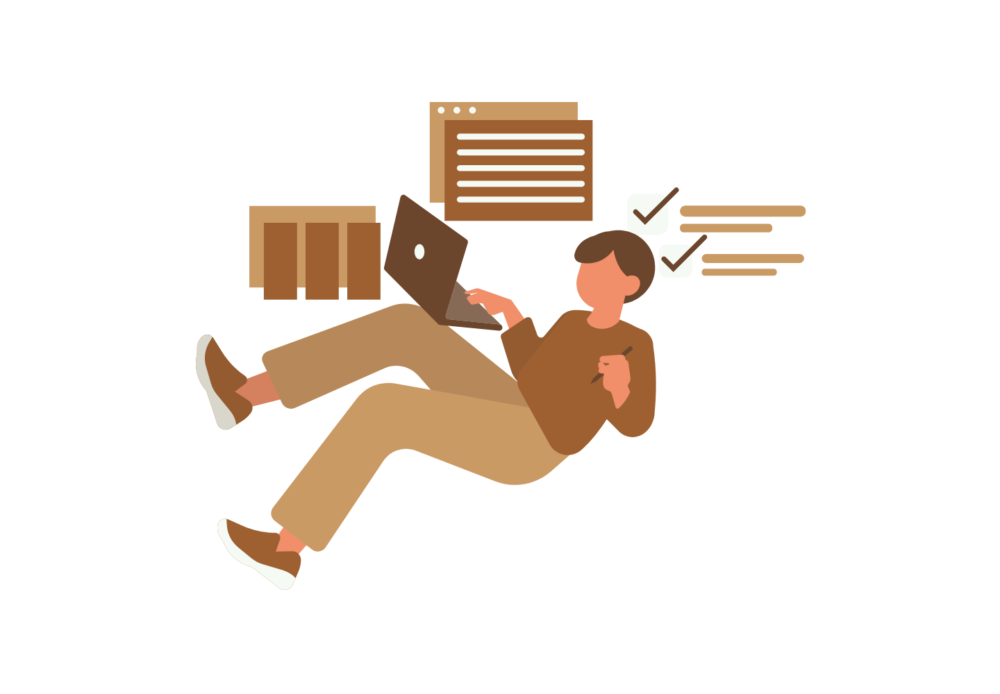

Kamp Gen Z
Welkom bij Kamp Gen Z, het kamp van de dromers én de doeners. Hier
draait alles om slim werken, niet per se lang werken. In dit kamp gaat
alles in een rap tempo: multitasken, schakelen en oplossingen vinden
alsof het vanzelf gaat. Ze zijn opgegroeid in een digitale wereld,
gewend om in seconden nieuwe informatie te vinden en razendsnel
beslissingen te nemen.
Maar snelheid betekent niet dat ze zichzelf voorbijrennen, balans
staat net zo hoog op de agenda. Gen Z gelooft dat werken en leven hand
in hand moeten gaan. Ze wisselen moeiteloos tussen werk en vrije tijd,
tussen focus en ontspanning, en kiezen liever voor flexibiliteit dan
voor vaste patronen. Waar hun voorgangers vaak vasthouden aan lange
dagen en duidelijke kaders, zoekt dit kamp juist vrijheid en ruimte om
zichzelf te ontwikkelen.
Ze omarmen samenwerking, creativiteit en persoonlijke groei, maar zijn
ook niet bang om kritische vragen te stellen: waarom doen we het
eigenlijk zo? Voor hen is werk meer dan alleen een inkomen, het is een
manier om iets bij te dragen en zichzelf te ontplooien.
“Balans is de nieuwe productiviteit.”
Kamp Gen X
Tegenover Kamp Gen Z staat Kamp Gen X, het kamp van ervaring en
discipline. Hier geloven ze dat echte resultaten niet ontstaan uit
shortcuts, maar uit inzet, structuur en de lange adem. Generatie X
heeft de werkvloer zien veranderen en meegemaakt hoe systemen zijn
opgebouwd, getest en aangepast. Die ervaring nemen ze mee in alles wat
ze doen: zorgvuldig plannen, verantwoordelijkheden serieus nemen en
doorzetten, ook wanneer de omstandigheden tegenzitten.
Voor Gen X is werk geen sprint maar een marathon. Ze hechten waarde
aan duidelijke afspraken, loyaliteit en het nakomen van beloftes. Waar
Gen Z vaak zoekt naar flexibiliteit, voelen zij zich juist prettig bij
vaste structuren en een stabiele omgeving. Consistentie en
betrouwbaarheid zijn de basis waarop ze bouwen, en ze zien discipline
als de sleutel tot succes op de lange termijn.
Ze zijn nuchter, resultaatgericht en geloven dat je door hard werken
respect verdient. Hun kracht ligt in overzicht houden, complexe
systemen begrijpen en teams bij elkaar brengen door hun ervaring en
pragmatische blik.